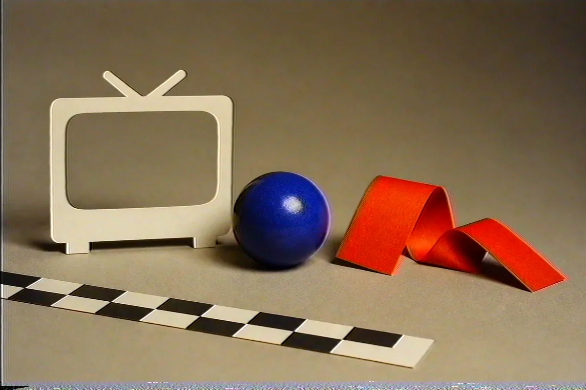
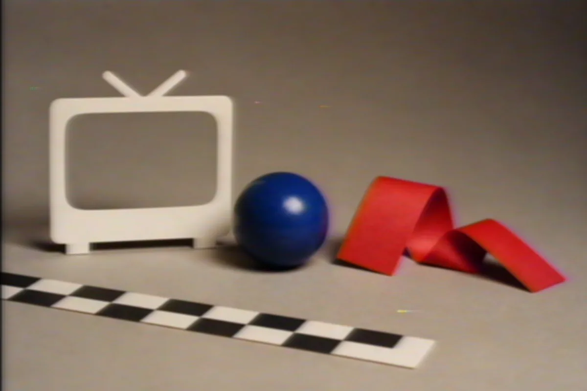
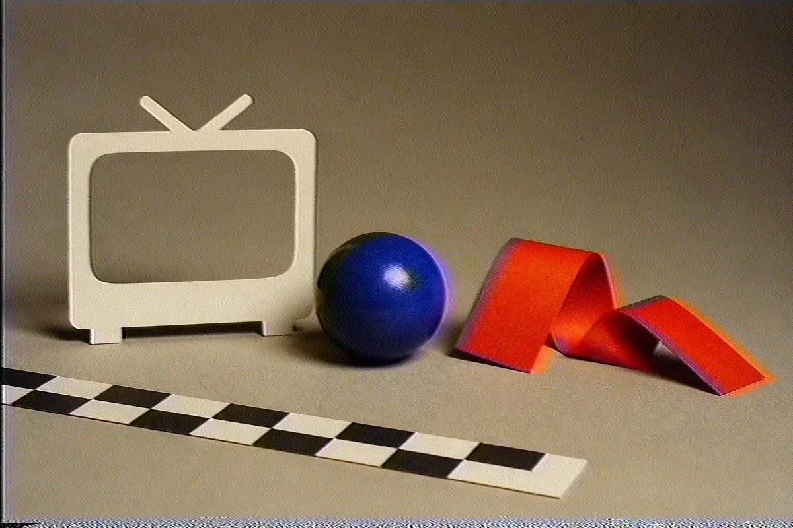
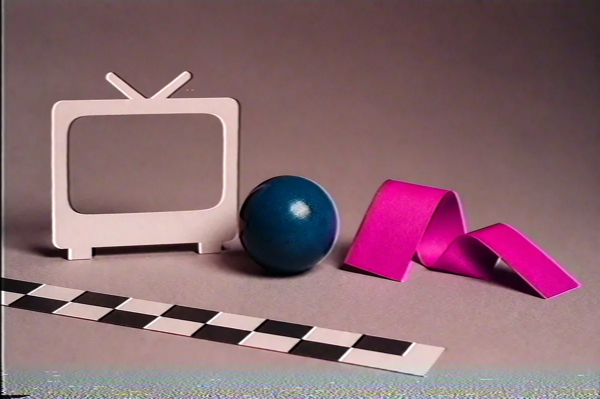

Native signal processing for ComfyUI
Break the signal.
Ten focused nodes carry image tensors through a native Rust NTSC pipeline. Build
convincing tape wear, CRT softness, chroma drift, scanlines, and signal noise without
leaving your ComfyUI graph.
10 nodes
14 presets
Rust native core
Input / clean
Output / VHS Classic
Real native output
One frame. Three damaged signals.
Every result below came from the compiled extension and the presets in this repository.
VHS Classic Tape edge shift · color bleed
CRT TV Soft luma · field texture
Security Cam Noise floor · surveillance wear
Choose the right amount of control
Start simple. Split the signal when needed.
01
Simple
Pick a preset, set intensity and saturation, and keep moving.
02
Intermediate
Add scaling, field mode, and deterministic seed controls.
03
Advanced
Expose the full signal-processing surface in one node.
04—10
Chainable families
Signal · Scanlines · Artifacts · Noise · VHS · Global · Scale
Example workflows
Four graphs, ready to load.
Each image is the real output of its workflow, run in ComfyUI 0.43 with seed 23. In ComfyUI open Templates → comfyui-ntsc-rs , or drop a JSON file onto the canvas.

Simple · VHS Classic Load Image → Simple → Save Workflow JSON

Intermediate · CRT TV Load Image → Intermediate → Save Workflow JSON

Chain · worn tape Signal → Artifacts → Noise → VHS Workflow JSON

Advanced · security cam EP tape, snow, phase error Workflow JSON
Node reference
Every node, every input.
All nodes take and return a ComfyUI IMAGE batch and live in the NTSC category.
NTSC-RS Simple NtscRs_Simple4 inputs VHS/CRT effect with preset configurations. For full parameter control, use the Advanced node.
Preset vhs_classic / vhs_worn / vhs_pro / crt_tv / crt_pvm / clean_ntsc …
Intensity 0.0–1.0, default 1.0
Saturation -1.0–2.0, default 0.25
Seed -2147483648–2147483647, default 0
NTSC-RS Intermediate NtscRs_Intermediate7 inputs VHS/CRT effect with preset configurations and scaling controls. Balance between simplicity and full parameter control.
Preset vhs_classic / vhs_worn / vhs_pro / crt_tv / crt_pvm / clean_ntsc …
Intensity 0.0–1.0, default 1.0
Scale Preset Source (1x) / Half (0.5x) / Quarter (0.25x) / Double (2x) / Custom
H Scale 0.125–8.0, default 1.0
V Scale 0.125–8.0, default 1.0
Field Mode InterleavedUpper / InterleavedLower / Both / Alternating
Seed -2147483648–2147483647, default 0
NTSC-RS Advanced NtscRs_Advanced63 inputs Full NTSC/VHS/CRT effect with complete parameter control. 1:1 quality with ntsc-rs library.
Filter Type ConstantK / Butterworth
Luma Filter None / Box / Notch
Chroma Lowpass In None / Light / Full
Chroma Demodulation Box / Notch / OneLineComb / TwoLineComb
Chroma Lowpass Out None / Light / Full
Luma Smear 0.0–1.0, default 0.5
Sharpening -1.0–2.0, default 1.0
Chroma Vert Blend default true
Field Mode Alternating / Upper / Lower / Both / InterleavedUpper / InterleavedLower
Scanline Phase Degrees0 / Degrees90 / Degrees180 / Degrees270
Phase Offset 0–3, default 0
Head Switching On default true
Head Height 0–24, default 8
Head Offset 0–24, default 3
Horizontal Shift -100.0–100.0, default 72.0
Mid Line On default true
Mid Line Pos 0.0–1.0, default 0.95
Mid Line Jitter 0.0–1.0, default 0.03
Tracking Noise On default true
Tracking Height 0–120, default 12
Wave Intensity -50.0–50.0, default 15.0
Snow Intensity 0.0–1.0, default 0.025
Snow Anisotropy 0.0–1.0, default 0.25
Noise Intensity 0.0–1.0, default 0.25
Composite Noise On default true
Composite Intensity 0.0–1.0, default 0.05
Composite Frequency 0.0–1.0, default 0.5
Composite Detail 1–5, default 1
Luma Noise On default true
Luma Intensity 0.0–1.0, default 0.01
Luma Frequency 0.0–1.0, default 0.5
Luma Detail 1–5, default 1
Chroma Noise On default true
Chroma Intensity 0.0–1.0, default 0.1
Chroma Frequency 0.0–0.5, default 0.05
Chroma Detail 1–5, default 2
Ringing On default true
Ringing Freq 0.0–1.0, default 0.45
Ringing Power 1.0–10.0, default 4.0
Ringing Intensity 0.0–10.0, default 4.0
VHS On default true
Tape Speed NONE / SP / LP / EP
Chroma Loss 0.0–1.0, default 2.5e-05
Sharpen On default true
Sharpen Intensity 0.0–5.0, default 0.25
Sharpen Freq 0.5–4.0, default 1.0
Edge Wave On default true
Edge Intensity 0.0–20.0, default 0.5
Edge Speed 0.0–10.0, default 4.0
Edge Freq 0.0–0.5, default 0.05
Edge Detail 1–5, default 2
Snow Intensity 0.0–100.0, default 0.00025
Snow Anisotropy 0.0–1.0, default 0.5
Phase Noise 0.0–1.0, default 0.001
Phase Error 0.0–1.0, default 0.0
H Chroma Delay -40.0–40.0, default 0.0
V Chroma Delay -20–20, default 0
Scale On default true
H Scale 0.125–8.0, default 1.0
V Scale 0.125–8.0, default 1.0
Scale With Size default false
Seed -2147483648–2147483647, default 0
Frame Num 0–2147483647, default 0
NTSC-RS Signal NtscRs_Signal8 inputs Signal processing: filter type, luma/chroma filters, smear, and sharpening. Chain after other NTSC category nodes.
Filter Type ConstantK / Butterworth
Luma Filter None / Box / Notch
Chroma Lowpass In None / Light / Full
Chroma Demodulation Box / Notch / OneLineComb / TwoLineComb
Chroma Lowpass Out None / Light / Full
Luma Smear 0.0–1.0, default 0.5
Sharpening -1.0–2.0, default 1.0
Chroma Vert Blend default true
NTSC-RS Scanlines NtscRs_Scanlines3 inputs Field and scanline processing: field mode and scanline phase shift. Chain after other NTSC category nodes.
Use Field Alternating / Upper / Lower / Both / InterleavedUpper / InterleavedLower
Video Scanline Phase Shift Degrees0 / Degrees90 / Degrees180 / Degrees270
Phase Shift Offset 0–3, default 0
NTSC-RS Artifacts NtscRs_Artifacts14 inputs VHS artifacts: head switching and tracking noise emulation. Chain after other NTSC category nodes.
Head Switching default true
Head Switching Height 0–24, default 8
Head Switching Offset 0–24, default 3
Head Switching H Shift -100.0–100.0, default 72.0
Mid Line Enabled default true
Mid Line Position 0.0–1.0, default 0.95
Mid Line Jitter 0.0–1.0, default 0.03
Tracking Noise default true
Tracking Noise Height 0–120, default 12
Tracking Wave Intensity -50.0–50.0, default 15.0
Tracking Snow Intensity 0.0–1.0, default 0.025
Tracking Snow Anisotropy 0.0–1.0, default 0.25
Tracking Noise Intensity 0.0–1.0, default 0.25
Seed -2147483648–2147483647, default 0
NTSC-RS Noise NtscRs_Noise17 inputs Noise effects: composite, luma, and chroma noise. Chain after other NTSC category nodes.
Composite Noise default true
Composite Intensity 0.0–1.0, default 0.05
Composite Frequency 0.0–1.0, default 0.5
Composite Detail 1–5, default 1
Luma Noise default true
Luma Intensity 0.0–1.0, default 0.01
Luma Frequency 0.0–1.0, default 0.5
Luma Detail 1–5, default 1
Chroma Noise default true
Chroma Intensity 0.0–1.0, default 0.1
Chroma Frequency 0.0–0.5, default 0.05
Chroma Detail 1–5, default 2
Ringing default true
Ringing Frequency 0.0–1.0, default 0.45
Ringing Power 1.0–10.0, default 4.0
Ringing Intensity 0.0–10.0, default 4.0
Seed -2147483648–2147483647, default 0
NTSC-RS VHS NtscRs_VHS11 inputs VHS-specific effects: tape speed, chroma loss, sharpening, edge wave. Chain after other NTSC category nodes.
VHS Tape Speed NONE / SP / LP / EP
VHS Chroma Loss 0.0–1.0, default 2.5e-05
VHS Sharpen default true
Sharpen Intensity 0.0–5.0, default 0.25
Sharpen Frequency 0.5–4.0, default 1.0
Edge Wave default true
Edge Wave Intensity 0.0–20.0, default 0.5
Edge Wave Speed 0.0–10.0, default 4.0
Edge Wave Frequency 0.0–0.5, default 0.05
Edge Wave Detail 1–5, default 2
Seed -2147483648–2147483647, default 0
NTSC-RS Global NtscRs_Global7 inputs Global effects: snow speckles, chroma phase noise/error, chroma delay. Chain after other NTSC category nodes.
Snow Intensity 0.0–100.0, default 0.00025
Snow Anisotropy 0.0–1.0, default 0.5
Chroma Phase Noise 0.0–1.0, default 0.001
Chroma Phase Error 0.0–1.0, default 0.0
Chroma Delay H -40.0–40.0, default 0.0
Chroma Delay V -20–20, default 0
Seed -2147483648–2147483647, default 0
NTSC-RS Scale NtscRs_Scale3 inputs Resolution scaling: horizontal and vertical scale factors. Performs actual image resizing using PyTorch. Chain after other NTSC category nodes.
Scale Preset Source (1x) / Half (0.5x) / Quarter (0.25x) / Double (2x) / Quad (4x) / Custom
H Scale 0.125–8.0, default 1.0
V Scale 0.125–8.0, default 1.0
The working path
Tensor in. Analog damage. Tensor out.
01 ComfyUI BHWC float tensor 02 PyO3 validated NumPy boundary 03 ntsc-rs native YIQ signal work 04 Output RGB tensor, same graph
ComfyUI 0.3.48+ · Python 3.12+
Install like any custom node.
Use ComfyUI-Manager or the Comfy Registry, or clone into custom_nodes. On first start the node loads its prebuilt Rust binary for your OS, so no compiler is needed. Builds exist for Windows x64, Linux x64/arm64 and macOS arm64/x64.
No prebuilt binary for your platform? Install Rust and run python build_node.py with the Python that runs ComfyUI; the console prints the exact command.
cd ComfyUI/custom_nodes
git clone https://github.com/gvastethecreator/comfyui-ntsc-rs.git
# restart ComfyUI
# or, with comfy-cli
comfy node install comfyui-ntsc-rs
 Input / clean
Input / clean
 Output / VHS Classic
Output / VHS Classic